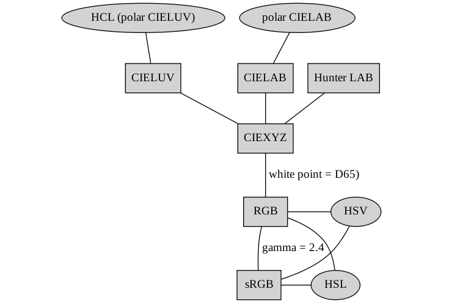

Paul Murrell
Department of Statistics
The University of Auckland
paul@stat.auckland.ac.nz
The motivation for this RFC is that currently the R graphics engine stores colors as RGB tristimulus values, but without any mention about which RGB colorspace that is. In particular, there is no assumption about the chromaticities of the RGB primaries and there is no assumption about the whitepoint. There is some notion of gamma, but it is, at best, a little confused. Currently, an R color object is completely ambiguous.
If we select sRGB as the colorspace for the graphics engine, it comes with specific chromaticities for the RGB primaries, a specific white point, and a specific gamma correction. This would mean that R color objects would have a clear meaning. Because sRGB is an industry standard, R color objects would also have a useful meaning because they would be set up to "just work" on most modern computer screens (within the bounds of what is necessary for statistical graphics; we're not aiming for desktop publishing or photographic manipulation standards).
Having sRGB as the graphics engine colorspace would also make it easier to write code for working with colors, such as the 'colorspace' package, because the target, R color objects, would be well-defined.
No changes need to be made to most of the C code (except maybe some comments need adding :). sRGB colors can be stored using the existing 24-bit structure; only the meaning of these values is altered (basically, from meaningless to meaningful).
The alpha channel is orthogonal to the colorspace, so is not affected. (Though if anyone ever wanted to play with something like alpha-compositing, I believe the non-linear sRGB values would have to be linearized (reverse the gamma correction) before doing the compositing.)
There is code in colors.c that supports the hcl() function, but this is already designed for sRGB (it uses the sRGB primaries, white point, and gamma). One issue is that hcl() performs gamma correction; this may be unnecessary (inappropriate) if uncorrected gamma values are stored.
The basic question is whether to store gamma-corrected or gamma-uncorrected values and, unfortunately, I am completely torn.
One consideration is what the user enters and what the user sees (what values are printed). First of all, these should be the same thing (either both corrected or both uncorrected). Perhaps it is easier for users to enter uncorrected, but it's not as if linear RGB values are particularly intuitive anyway, so this does not seem like a deal breaker. Of course, what the user enters and what the user sees does not have to be what is stored, though if the user enters and see linear values it would be more efficient to store linear values so as to avoid unnecessary correcting and uncorrecting.
Another consideration is that if colors are to be manipulated, they should be in a linear space. In order to have any rational control over what you are doing with color, you need to have a linear system, i.e., what comes out is what you put in. This suggests linear input (because then the software gamma corrects, the hardware reverses that, and the output is the same as the input). You can then deliberately mess with what you put in (e.g., attempt non-linearity to deliver equal perceptual brightness), but in order to have this sort of control, you need to know that what comes out is what you put in. Again, this does not require uncorrected values to be stored, but it adds to the suggestions to keep everything linear as long as possible.
One argument against storing uncorrected (linear) values is the consideration of perceptual non-linearity. When using an 8-bit linear coding (storage) scheme, because of non-linear perceptual response to intensity, values at low end become too different from each other (so there are gaps in the brightness range) and values at the high end become too similar to each other (so some stored values are perceptually identical, i.e., there is wastage).
Another detail to watch out for is "quantization". If you gamma convert on 8-bit values, the result does not cover the range of 8-bit values (e.g., (1/255)^.45 * 255 = 21, so you can't get any value in the range 1 to 20). This also argues against storing linear values 8-bit quantization.
On the other hand, the very same documents contain comments that suggest that gamma correction on the way to the graphics device (i.e., store linear) is a good approach ... ?
My current feeling is that corrected (non-linear) values should be stored (as 8-bit per channel) in order to avoid the redundancy/quantization effects and that the R-level API should allow (via arguments) the user to enter and print either corrected/linear or uncorrected/non-linear values (but the default settings for these arguments should be consistent).
The rgb() function requires no change, BUT it would need to be acknowledged that the R, G, B values would be interpreted as sRGB values. I think we need to add an argument that specifies whether the values being entered are already gamma-corrected. NOTE that the hsv() function (see below) will take linear values (it can only gamma correct after converting to RGB), so linear RGB values would be consistent with that.
The hsv() function needs a bit of work. It currently has a gamma argument, but it defaults to 1. In the C code, the conversion to RGB is performed and then the gamma is applied (see do_hsv in colors.c), BUT the gamma is used as a straight power (not inverted) AND the default 1 is not sensible. The gamma argument would have to be removed altogether and replaced with a fixed value of 2.4 and an exact sRGB gamma correction used (see gtrans in colors.c, which is already used for hcl-to-rgb conversion).
You can see the hsv() gamma problem with the following code, which uses the colorspace package to get the model answer:
library(colorspace)
# VERY different colors (because hsv() is not gamma-correcting)
# [hex(..., gamma=2.4) because of bug in colorspace (see below)]
plot(1:2, cex=40, pch=16, xlim=c(0, 3), ylim=c(0, 3),
col=c(hsv(0, .5, .5),
hex(HSV(0, .5, .5), gamma=2.4)))
# MUCH better given correct gamma
# (colors still not identical because hex() uses the
# exact sRGB gamma correction formula)
plot(1:2, cex=40, pch=16, xlim=c(0, 3), ylim=c(0, 3),
col=c(hsv(0, .5, .5, gamma=1/2.2),
hex(HSV(0, .5, .5), gamma=2.4)))
# hcl() gets exactly the same answer as colorspace's HSV()
# > as(HSV(0, .5, .5), "polarLUV")
# L C H
# [1,] 61.92659 33.32213 12.18075
plot(1:2, cex=40, pch=16, xlim=c(0, 3), ylim=c(0, 3),
col=c(hcl(12.18075, 33.32213, 61.92659),
hex(HSV(0, .5, .5), gamma=2.4)))
There is a function covertColor() to convert between colorspaces. This works at the R level and it currently assumes that, for sRGB colors, the values being entered are gamma-corrected, so it is just a matter of making sure that that is what is supplied to the function.
There are two issues for devices:
Off-screen (file) devices may want to record that colors are being specified in the sRGB colorspace; this will help in viewing and printing the output.
postscript() already has a 'colormodel' argument that allows RGB, greyscale, or CMYK (trivial conversion from RGB). These color models can be applied by using PostScript operators setrgbcolor, setcmykcolor, and setgray. After a quick look at the PostScript Language Reference Manual (PLRM; third edition), sRGB is doable via the setcolor operator, but will need additional setup to specify the sRGB colorspace (see p. 225 of PLRM).
From a look at the PDF docs, you can certainly specify a colorspace (as expected), but to get sRGB might need a bit of setup code (see pp. 256-257 of the PDF Reference (sixth edition)).
Need to look at bitmap(), png() (at least on Windows).
Screen devices may have to adjust how they handle gamma correction.
sRGB assumes a very specific gamma correction, which means that the device will not have to do anything about gamma correction if the device conforms to the sRGB specification and, for devices that do not conform, the sRGB spec provides precise information that should be enough for the device code to adjust R color objects to the specifications of the device.
Some relevant information may be available from various standards, e.g., CSS.
The x11() device has separate RedGamma, BlueGamma, and GreenGamma globals. These default to the value 0.6, but they are used as direct power values rather than the inverse of the power value, so they correspond to a "gamma" of about 1.7). Anyway, I think they get overridden by a default value of 1 unless explicitly set in options(gamma=) or when an X11 device is opened. If the screen conforms to sRGB, the value 1 will be perfect. Otherwise, something a bit more than the current raise-to-the-power-of-gamma would need to be done; it would be necessary to revert the sRGB gamma correction and then apply the new explicit gamma correction.
The Quartz device uses CGContextSetRGB[Fill|Stroke]Color() for setting color (devQuartz.c), which means that it works in a "generic RGB colorspace", which means that "the system" tries to automatically convert the RGB color spec to the color space of the output device. If R's color space became sRGB, then it might be better to explicitly set the Quartz color space to sRGB (then Quartz can do a better job of converting to the color space of different output devices). It looks like something like ...
CGColorSpaceCreateWithName(kCGColorSpaceSRGB);
... might work.
The windows device (devWindows.c) performs gamma correction itself (in GArgb()), based on the current graphics context gamma (which defaults to the starting gamma from the device, which defaults to 1 [see source code for windows()]). This the default value is good, but the gamma correction does not look right (it raises to the power of gamma, but it should be to the power 1/gamma [?]). Code would need to be added to support values of gamma other than 1 (to reverse the sRGB gamma and apply a different value). I couldn't see anything to suggest that GraphApp provides support for colorspaces.
Third-party drivers would need to be looked at. I suspect that currently they do nothing about gamma, which would, without any code changes, become probably the correct thing to do (at least as a default).
The 'colorspace' package. This list includes some basic todo's for the package:
All CIE-based colorspaces and conversions between them are unaffected. The problems arise at the conversion from CIE-based to an RGB colorspace AND when converting 'colorspace' colors to R color objects (which would be sRGB).
The conversion from CIE-based to RGB always ends up with CIE XYZ to RGB. This conversion allows for different white points to be specified, but assumes that the RGB primaries conform to sRGB. Gamma correction is performed as a separate step, with gamma able to be specified.
There should be a separate sRGB class created that only records the R, G, B channels. The chromaticities of the primaries, the white point, and the gamma are all implicit.
Converting from XYZ with D65 as the white point and a gamma of 2.4, the result is an sRGB color.
The RGB class is currently underspecified. There should be a record of the white point for an object (and it should be possible to specify this when creating an RGB object, just as it is when converting from XYZ to RGB). Otherwise the RGB object is meaningless.
HSV (and HSL) objects should also record this information (even though it will not be used when converting to RGB).
Gamma correction of an RGB object with a white point of D65, using a gamma of 2.4, should result in an sRGB object.
There should be a separate cRGB (corrected RGB) class and gamma correction of an RGB object with a non-D65 white point, and/or using a gamma other than 2.4, should result in a cRGB object.
The hex() function (to convert a colorspace color object to an R color object) will have nothing to do to convert an sRGB object (other than convert 0-to-1 values to hexadecimal). Convertion of an RGB object with a D65 white point will be straightforward, but for other RGB objects and for cRGB objects, conversion (if possible) will require conversion back to XYZ and then forward again to sRGB.
The hex() function currently uses a default gamma value of 2.2. This is just a straight bug; the default should be 2.4. 2.2 is used when approximating sRGB overall gamma with a single power curve. But the underlying calculation uses the "exact" sRGB gamma correction, which has a small straight line segment followed by a power curve. That curve has an exponent of 1/2.4.
It could be argued that hex() should drop the gamma argument altogether, but it could be useful to convert RGB or cRGB values to hex representation too. Possibly the best approach is to introduce an Rcolor() function that has no gamma argument and only converts to an sRGB hex representation.
The hex() function should have an alpha argument to allow semitransparency.
The diagram below illustrates what the relationships between the different colorspaces would look like following these changes. 
Add lcms support?
The 'dichromat' package.
Based on a look at the code, plus the Vienot et al. (1999) article it is based on, moving to sRGB just puts this package on a firmer foundation.
The package interpolates (via loess smooth) deuteranope and protanope colors based on a fixed set of normal-to-color-blind mappings (as provided in the Vienot at al article). The important point seems to be that the mappings in the article made asumptions about display screen primaries, white point and gamma that correspond pretty closely to sRGB (see paragraph 3 on page 244 of the article). This suggests that it is very appropriate to send sRGB triplets into 'dichromat' from R and to interpret triplets fed back to R by 'dichromat' as sRGB triplets, which is what will now be the case.
One detail to worry about is whether values being passed back-and-forth are gamma-corrected. The values in the crucial table of mappings in the Vienot et al article are uncorrected (see "step 1" on page 245 of the article, which performs the (crude) gamma correction; and "step 7" on page 248, which performs the inverse). This means that the interpolations in 'dichromat' are occurring on uncorrected values, so values returned by 'dichromat' are uncorrected and that the 'dichromat' code is interpreting incoming values as uncorrected.
Depending on how sRGB values are stored in the core engine, there may be a need to add gamma (un)correction to 'dichromat'.
Image processing packages???
An overall issue is where to put the code that does conversions between colorspaces. Currently at least some transformations exist in each of the following places:
Graphics devices may need to do these conversions so it make most sense to have it in C code within (the graphics engine of) the base system. The main disadvantage of this is that it is not easy for anyone outside R core to extend the code to new colorspaces.
It might be possible to use something fancier than sRGB for the internal storage of colors (e.g., CIE XYZ), but this has not been seriously considered because it would be overkill and would force the introduction of a lot more conversions in the core graphics code (with a corresponding cost both in terms of code and performance).